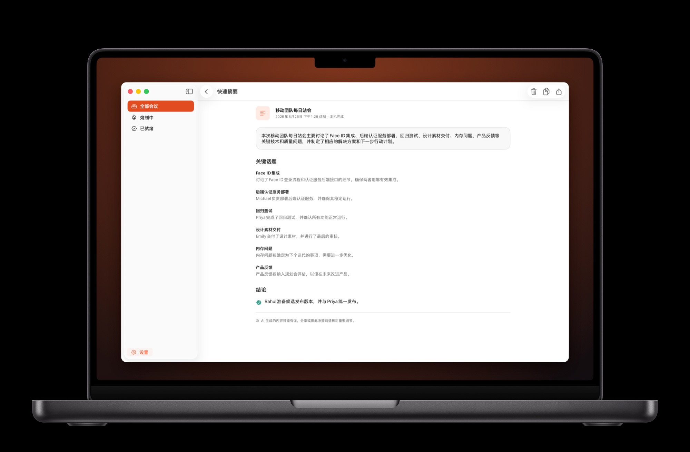
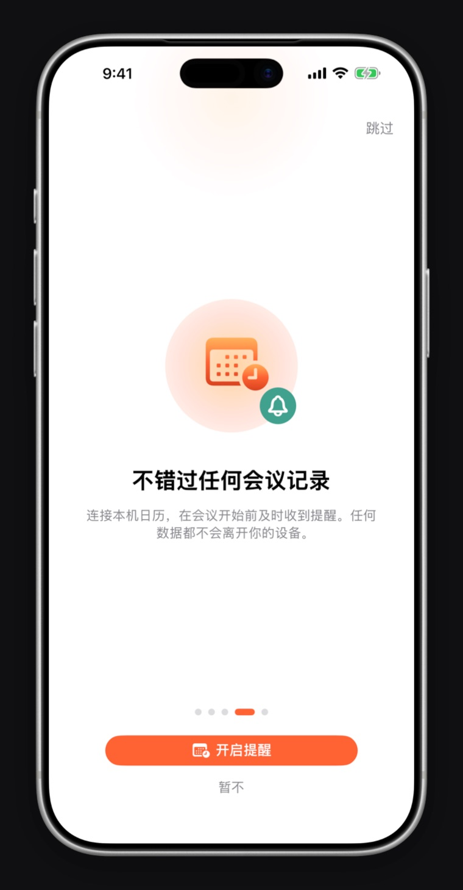

Kiln 4.1 新功能
不错过任何会议记录。
Kiln 在你的设备上读取日历，并在会议即将开始时提醒你。它从不修改你的日程，也绝不会把它们发送到任何地方。
点按提醒，Kiln 便会打开并准备好录音，会议名称也已自动填好。
录制一场会议，或导入一场。Kiln 会区分不同的声音，写出转录文本，再把它变成你本来就要写的那份文档。这一切都在你的设备上完成。Kiln 从不把音频、转录文本或报告发送到任何地方。
报告
每一份都根据你的转录文本写成，并使用会议本身的语言。1
一分钟掌握要点——概览、话题与结论
深入覆盖每个概念，并附示例
带负责人和优先级的任务
可直接开工的 Epic、故事与验收标准
决策及其理由、影响与风险
参与者、议程、讨论与结论
一封专业的跟进邮件，随时可发送
新功能、改进、修复与已知问题

隐私
Kiln 没有自己的服务器。你的会议在你的设备上处理，Kiln 从不把它们发送到任何地方。
转录、区分说话人、标题和报告，全部直接在你的设备上完成。
它在设计上就没有联网的权限，因此无法连接任何地方，连检查更新也不行。
无需注册，也没有任何东西会追踪你、向你展示广告或统计你如何使用应用。
删除一场会议，Kiln 会移除它的录音、转录文本以及由它生成的每一份报告。较早之前的备份会保留其中的副本，直到它们被替换。
语言
Kiln 可转录九种语言，并以会议本身的语言撰写每一份报告，而不是翻译成英语。2Kiln 的界面同样提供这九种语言，而且可以单独设置，不受系统语言影响。

Kiln 4.1 新功能
Kiln 在你的设备上读取日历，并在会议即将开始时提醒你。它从不修改你的日程，也绝不会把它们发送到任何地方。
点按提醒，Kiln 便会打开并准备好录音，会议名称也已自动填好。
Mac、iPhone 和 iPad
一款适用于 Mac、iPhone 和 iPad 的原生应用，在每台设备上都有它应有的贴心细节。